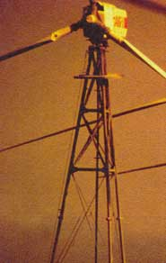
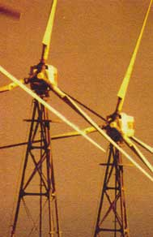
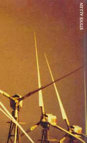
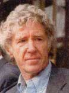
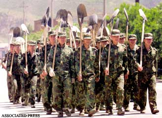
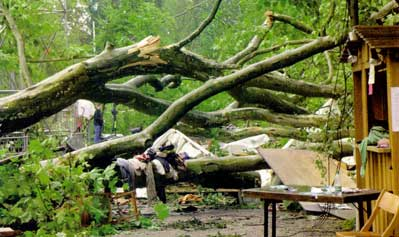
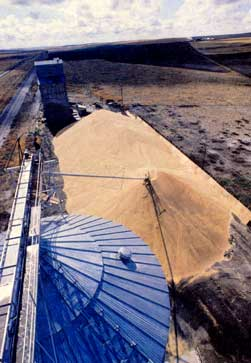
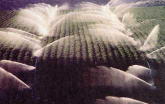
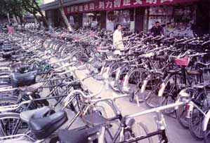

Lester R. Brown started his career as a farmer, growing tomatoes in southern New Jersey with his younger brother. After earning a degree in agricultural science from Rutgers University in 1955, he spent six months living in rural India. With advanced degrees in agricultural economics and public administration, he has served as an advisor to the U.S. government on agricultural issues and was one of the founders of the Overseas Development Council. In 1974 he founded the Worldwatch Institute, a research institute devoted to the analysis of global environmental issues. In 1984 he launched the "State of the World" reports, annual assessments that have become a bible of the global environmental movement. A MacArthur Fellow, be is the recipient of many international prizes and awards and has authored more than 20 books on the environment and the economy. In May he founded the Earth Policy Institute to promote an environmentally sustain able economy.
Why we must use ecological reality to build a new economy
The issue now is whether the environment is part of the economy or the economy is part of the environment.
Today we need a similar shift in our worldview in how we think about the relationship between the Earth and the economy. The issue now is whether the environment is part of the economy or the economy is part of the environment. Economists see the environment as a subset of the economy. Ecologists, on the other hand, see the economy as a subset of the environment.
Like Ptolemy's view of the solar system, the economists' view confuses efforts to understand our modern world and has created an economy out of sync with the ecosystem on which it depends.
Economic theory and economic indicators do not explain how the economy is disrupting and destroying the Earth's natural systems. Evidence the economy is in conflict with the Earth's natural systems can be seen in the daily news reports of collapsing fisheries, shrinking forests, eroding soils, deteriorating rangelands, expanding deserts, rising carbon dioxide (CO 2 ) levels, falling water tables, rising temperatures, more destructive storms, melting glaciers, rising sea level, dying coral reefs and disappearing species. These trends, which mark a stressed relationship between the economy and the Earth's ecosystem, are taking a growing economic toll. At some point this will overwhelm the worldwide forces of progress, leading to economic decline. The challenge for our generation is to reverse these trends before environmental deterioration leads to long-term economic decline, as it did for so many earlier civilizations.
These increasingly visible trends indicate that if the operation of the subsystem - the economy - is not compatible with the behavior of the larger system - the Earth's ecosystem - both eventually will suffer. The larger the economy becomes relative to the ecosystem, and the more it presses against the Earth's natural limits, the more destructive this incompatibility will be.
An environmentally sustainable economy - an eco-economy - requires that the principles of ecology establish the framework for economic policy and that econo mists and ecologists work together to fashion the new economy. Ecologists understand that all economic activity, indeed all life, depends on the Earth's ecosystem - the complex of individual species living together, interacting with each other and their physical habitats. These millions of species exist in an intricate balance, woven together by food chains, nutrient cycles, the hydrological cycle and the climate system. Economists know how to translate goals into policy. Economists and ecologists working together can design and build an eco-economy, one that can sustain progress.
The differences between ecology and economics are fundamental. For example, ecologists worry about limits, while economists tend not to recognize any such constraints. Ecologists, taking their cue from nature, think in terms of cycles, while economists are more likely to think linearly, or curvilinearly. Economists have a great faith in the market, while ecologists often fail to appreciate the market adequately.
The gap between economists and ecologists in their perception of the world could not be wider as the new century begins. Economists look at the unprecedented growth of the global economy and of international trade and investment and see a promising future with more of the same. They note with justifiable pride that the global economy has expanded sevenfold since 1950, raising output from $6 trillion of goods and services to $43 trillion in 2000, boosting living standards to levels not dreamed of before.
Ecologists look at this same growth and realize it is the product of burning vast quantities of artificially cheap fossil fuels, a process that is destabilizing the climate. They look ahead and predict more intense heat waves, more destructive storms, melting ice caps and a rising sea level that will shrink the land area even as population continues to grow.
As the new century gets under way, economists look at grain markets and see the lowest grain prices in two decades - a sure sign that production capacity is outrunning effective demand, that supply constraints are not likely to be an issue for the foreseeable future. Ecologists, meanwhile, see water tables falling in key foodproducing countries, and know that 480 million of the world's 6.1 billion people are being fed with grain produced by overpumping aquifers. They are worried about the effect of eventual aquifer depletion on food production.
Economists rely on the market to guide their decision making. They respect the market because it can allocate resources with an efficiency a central planner can never match (as the Soviets learned at great expense). Ecologists view the market with less reverence because they see a market that is not telling the truth. For example, when buying a gallon of gasoline, customers in effect pay to get the oil out of the ground, refine it into gasoline and deliver it to the local service station. But they do not pay the health care costs of treating respiratory illness from air pollution or the costs of climate disruption, or military costs of protecting our oil supplies.
Ecologists look at this same growth and realize that it is the product of burning vast quantities of artificially cheap fossil fuels, a process that is destabilizing the climate.
We have created an economy that cannot sustain economic progress, an economy that cannot take us where we want to go. Just as Copernicus had to formulate a new astronomical worldview after several decades of celestial observations and mathematical calculations, we, too, must formulate a new economic worldview based on several decades of environmental observations and analyses.
Although the idea that economics must be integrated into ecology may seem radi cal to many, evidence is mounting that it is the only approach that reflects reality. When observations no longer support the ory, it is time to change the theory what science historian Thomas Kuhn calls a par adigm shift. If the economy is a subset of the Earth's ecosystem, as this article con tends, the only formulation of economic policy that will succeed is one that respects the principles of ecology.
The good news is economists are becoming more ecologically aware, recognizing the inherent dependence of the economy on the Earth's ecosystem. For example, some 2,500 economists - including eight Nobel laureates - have endorsed the introduction of a carbon tax to stabilize climate. More and more economists are looking for ways to get the market to tell the ecological truth. This spreading awareness is evident in the rapid growth of the International Society of Ecological Economics ( www.ecologicaleconomics.org ), which has 1,200 members and chapters in Australia/New Zealand, Brazil, Canada, India, Russia, China and Europe.
ECONOMY SELF-DESTRUCTING
The economic indicators for the last half century show remarkable progress. As noted earlier, the economy expanded sevenfold between 1950 and 2000. International trade grew even more rapidly. The Dow Jones Index, a widely used indicator of the value of stocks traded on the New York Stock Exchange, climbed from 3,000 in 1990 to 11,000 in 2000. It was difficult not to be bullish about the long-term economic prospect as the new century began.
Difficult, that is, until you look at the ecological indicators. Here virtually every global indicator was headed in the wrong direction. The economic policies that have yielded the extraordinary growth in the world economy are the same ones that are destroying its support systems. By any conceivable ecological yardstick, these are failed policies. Mismanagement is destroying forests, rangelands, fisheries and croplands - the four ecosystems that supply our food and, except for minerals, all our raw materials, as well. Although many of us live in a high-tech urbanized society, we are as dependent on the Earth's natural systems as our hunter-gatherer forebears were.
To put ecosystems in economic terms, a natural system, such as a fishery, functions like an endowment. The interest income from an endowment will continue in perpetuity as long as the endowment is maintained. If the endowment is drawn down, income declines. If the endowment is eventually depleted, the interest income disappears. So it is with natural systems. If the sustainable yield of a fishery is exceeded, fish stocks begin to shrink. Eventually stocks are depleted and the fishery collapses. The cash flow from this endowment disappears, as well. As we begin the 21st century, our economy is slowly destroying its support systems, consuming its endowment of natural capital.
Even as expanding economic activity has been creating biological deficits, it has been upsetting some of nature's basic balances in other areas. With the huge growth in burning of fossil fuels since 1950, carbon emissions have overwhelmed the capacity of the Earth's ecosystem to fix carbon dioxide. The resulting rise in atmospheric C0 2 levels is widely believed by atmospheric scientists to be responsible for the Earth's rising temperature. The 14 warmest years since record keeping began in 1866 have all occurred since 1980.
One consequence of higher temperatures is more energy driving storm systems. Three powerful winter storms in France in December 1999 destroyed millions of trees, some of which had been standing for centuries.
Thousands of buildings were demolished. These storms, the most violent on record in France, wreaked more than $10 billion worth of damage - $170 for each French citizen. Nature was levying a tax of its own on fossil fuel burning.
Andrew Dlugolecki, a senior officer at the CGMU Insurance Group - Britain's largest insurance group - reports property damage worldwide is rising roughly 10 percent a year. He believes we are only beginning to see the economic fallout from climate change. At this rate of growth, by 2065 the amount of damage would exceed the projected gross world product. Well before then, Dlugolecki notes, the world would face bankruptcy.
Perhaps the most disturbing consequence of rising temperature is melting ice. Over the last 35 years, the ice covering the Arctic Sea has thinned by 42 percent. A study by two Norwegian scientists projects that within 50 years there will be no summer ice left in the Arctic Sea. The discovery of open water at the North Pole by an ice breaker cruise ship in mid-August 2000 stunned many in the scientific community.
This particular thawing does not affect sea level because the ice that is melting is already in the ocean. But the Greenland ice sheet is also starting to melt. Greenland is three times the size of Texas, and the ice sheet is up to two kilometers (1.2 miles) thick in some areas. An article in Science notes that if the entire ice sheet were to melt, it would raise sea level by some 7 meters (23 feet), inundating the world's coastal cities and Asia's rice-growing river flood plains. Even a 1 meter rise would cover half of Bangladesh's rice land, dropping food production below the survival level for millions of people:
Humanity is being squeezed between deserts expanding outward and rising seas encroaching inward. Civilization is being forced to retreat by forces it has created. Even as population continues to grow, the habitable portion of the planet is shrinking.
Aside from climate change, the economic effects of environmental destruction and disruption have been mostly local - collapsing fisheries, abandoned cropland and shrinking forests. But if local damage keeps accumulating, it will eventually affect global economic trends. In an increasingly integrated global economy, local ecosystem collapse can have global economic consequences.
THE ACCELERATION OF HISTORY
The pace of change is reaching an extraordinary rate, driven in part by technological innovation. Rapidly advancing technology is accelerating history, making it difficult for social institutions to manage change effectively. This is also true for unprecedented world population growth, even faster economic growth and the increasingly frequent collisions between the expanding economy and the limits of the Earth's natural systems. The current rate of change has no precedent.
Our evolution has prepared us to deal with many threats, but perhaps not with the threat we pose to ourselves with the uncontrolled growth in our own numbers.
Until recently population growth was so slow it aroused little concern. But since 1950 we have added more people to world population than during the preceding 4 million years. Economic expansion in earlier times was similarly slow. To illustrate, growth in the world economy during the Year 2000 exceeded that during the entire 19th century.
Throughout most of human history, the growth of population, rise in income and development of new technologies were so slow as to be imperceptible during an individual life span. For example, the climb in grain land productivity from 1.1 tons per hectare in 1950 to 2.8 tons per hectare in 2000 exceeds that during the 11,000 years from the beginning of agriculture until 1950.
The population growth of today has no precedent. Throughout most of our existence as a species, our numbers were measured in the thousands. Today, they measure in the billions. Our evolution has prepared us to deal with many threats, but perhaps not with the threat we pose to ourselves with the uncontrolled growth in our own numbers.
The pace of history also is accelerating as soaring human demands collide with the Earth's natural limits. National political leaders are spending more time dealing with the consequences of the collisions described earlier - collapsing fisheries, falling water tables, food shortages and more destructive storms - along with a swelling in ternational flow of environmental refugees and the many other effects of overshooting natural limits. As change has accelerated, the situation has evolved from one where individuals and societies change only rarely to one where they change continuously. They are changing not only in response to growth itself, but also to the consequences of growth.
The central question is whether the accelerating change that is an integral part of the modern landscape is beginning to exceed the capacity of our social institutions to cope with change. Change is particularly difficult for institutions dealing with international or global issues that require a concerted, cooperative effort by many countries with contrasting cultures if they are to succeed. For example, sustaining the existing oceanic fish catch may be possible only if numerous agreements are reached among countries on the limits to fishing in individual oceanic fisheries. And can governments, working together at the global level, move fast enough to stabilize climate before it disrupts economic progress?
The issue is not whether we know what needs to be done or whether we have the technologies to do it. The issue is whether our social institutions are capable of bringing about the change in the time available. As H.G. Wells wrote in The Outline of History, "Human history becomes more and more a race between education and catastrophe."
RESTRUCTURE OR DECLINE
Whether we study the environmental undermining of earlier civilizations or look at how adoption of the Western industrial model by China would affect the Earth's ecosystem, it is evident the existing industrial economic model cannot sustain economic progress. In our shortsighted efforts to sustain the global economy as currently structured, we are depleting the Earth's natural capital. We spend a lot of time worrying about our economic deficits, but it is the ecological deficits that threaten our long-term economic future. Economic deficits are what we borrow from each other; ecological deficits are what we take from future generations.
Transforming our environmentally destructive economy into one that can sustain progress depends on a Copernican shift in our economic mindset, a recognition that the economy is part of the Earth's ecosystem and can sustain progress only if the economy is restructured so that it is compatible with the ecosystem. The pre-eminent challenge for our generation is to design an eco-economy, one that respects the principles of ecology. A redesigned economy can be integrated into the ecosystem in a way that will stabilize the relationship between the two, enabling economic progress to continue.
Unfortunately, present-day economics does not provide the conceptual framework needed to build such an economy. It will have to be designed with an understanding of basic ecological concepts, such as sustainable yield, carrying capacity, nutrient cycles, the hydrological cycle and the climate system. Designers must also know natural systems provide not only goods, but also services - services that are often more valuable than the goods.
We know the kind of restructuring that is needed. In simplest terms, our fossil fuel-based, automobile-centered, throwaway economy is not a viable model for the world. The alternative is a solar/hydrogen energy economy, an urban transport system that is centered on advanced-design public rail systems and that relies more on the bicycle than on the automobile, and a comprehensive reuse/recycle economy. And we need to stabilize population as soon as possible.
TELLING THE TRUTH
How do we achieve this economic transformation when all economic decision makers - whether political leaders, corporate planners, investment bankers, or individual consumers - are guided by market signals, not the principles of ecological sustainability? How do we integrate ecological awareness into economic decision making? Is it possible for all of us who are making economic decisions to "think like ecologists," to understand the ecological consequences of our decisions? The answer is probably not. It simply may not be possible.
But there may be another approach, a simpler way of achieving our goal. Everyone making economic decisions relies on market signals for guidance. The problem is the market often fails to tell the ecological truth. It regularly underprices products and services by failing to incorporate the environmental costs of providing them.
Compare, for example, the cost of wind-generated electricity with that from a coal-fired power plant. The cost of the wind-generated electricity reflects the costs of manufacturing the turbine, installing it, maintaining it and delivering the electricity to consumers. The cost of the coal-fired electricity includes building the power plant, mining the coal, transporting it to the power plant and distributing the electricity to consumers. What it does not include is the cost of climate disruption caused by carbon emissions from coal burning - whether it be more destructive storms, melting ice caps, rising sea level or record heat waves. Nor does it include the damage to freshwater lakes and forests from acid rain, or the health care costs of treating respiratory illnesses caused by air pollution. Thus the market price of coal-fired electricity greatly understates its cost to society.
One way to remedy this situation would be to have environmental scientists and economists work together to calculate the cost of climate disruption, acid rain and air pollution. This figure could then be incorporated as a tax on coal-fired electricity that, when added to the current price, would give the full cost of coal use. This procedure, followed across the board, would mean that all economic decision makers - governments and individual consumers - would have the information needed to make more intelligent, ecologically responsible decisions.
We can now see how to restructure the global economy so as to restore stability between the economy and the ecosystem on which it rests. When I helped to pioneer the concept of environmentally sustainable economic development some 27 years ago, at the newly formed Worldwatch Institute, I had a broad sense of what the new economy would look like. Now we can see much more of the detail. We can build an ecoeconomy with existing technologies. It is economically feasible if we can get the market to tell us the full cost of the products and services that we buy.
The question is not how much will it cost to make this transformation but how much it will cost if we fail to do it. Oystein Dahle, retired vice president of Esso for Norway and the North Sea, observes, "Socialism collapsed because it did not allow prices to tell the economic truth. Capitalism may collapse because it does not allow prices to tell the ecological truth."
From Lester R. Brown, Eco-Economy: Building an Economy for the Earth. In Part II, to be featured in the April/May 2002 issue of Mother Earth News, Brown outlines how each sector of the economy must be transformed, including his predictions of which careers will be in greatest demand in the new economy.
Earth Policy Institute continuously updates its data and analysis as issues unfold.
|
 Clear-cutting in the Yangtze River basin helped create China's worst floods ever, leading to a complete ban on logging and conversion of state companies there from logging to tree-planting. |
 As global warming intensifies, more energy will drive the weather, creating significantly stronger storms. A storm that hit the European continent during the winter of 1999 left $7.5 billion damage in France, Germany and Switzerland. Thousands of centuries-old trees, like these in Paris, were destroyed. It was France's worst storm since record keeping began. |
 From 1951 to 2000, the world's farmers produced nearly double the amount of grain that had been produced from the beginning of agriculture to 1950. Future gains will be harder to come by. |
|
 The United States, China and India are overpumping water supplies, leading to depletion of aquifers. Drip irrigation systems would reduce water use by 30 percent to 70 percent. |
The future may look like this. Urban transport systems based on a combination of rail, bicycles and pedestrian walkways offer the best way of providing low-cost transportation and a healthy urban environment. Bike mechanics, your day is coming. |
 |
|
 |
 |
 |
|
 |
|
|